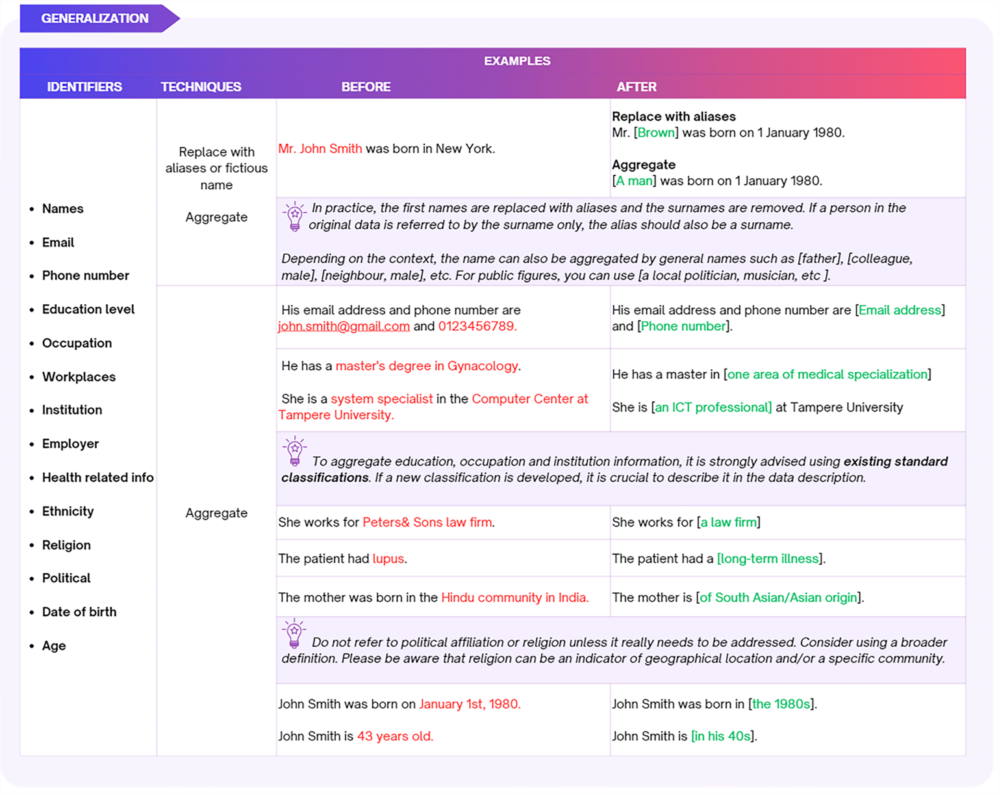

4 Pseudonymisation and Anonymisation Techniques
Pseudonymisation and anonymisation techniques vary depending on the types and nature of the data. This guide will highlight various techniques for the following types of research data: textual data,numerical data, audio and visual data, and geospatial data. Most of the presented techniques are used for anonymisation. However, please note that if you apply an anonymisation technique, such as removing identifiable information, but retain this information in a separate key file, this is considered as pseudonymisation.
4.1 Textual data
Textual data refers to any text-based content, such as transcripts of interviews, workshops and focus group discussions, open-ended questions in surveys, observational notes, meeting notes, etc. These types of data can be de-identified by generalising the identifying information, distorting or deleting the identifiers such as research participants’ names, gender, age, income, places and institutions names, addresses (physical location, email and IP), telephone numbers and any other sensitive information. The following techniques are commonly used to pseudonymise or anonymise textual data.
Generalisation: Replace or aggregate
Generalisation involves reducing detailed information or the precision of the information in a way that potentially disclosive information (identifiers) is replaced or aggregated. For example, instead of using a real name, an alias or general pronoun can be used to refer to a person. Examples of generalisation can be found in Figure 6 (next page).
Distot
In some instances, to preserve data usefulness, instead of generalising crucial information needed to understand the context, it is possible to distort the information by altering other identifiers.
For example, you have interviewed someone who participated in a high-level sports competition. If that information is of importance in research, then you may change other personal or competition details. You could change the years when the competition took place, the region (place, country) or even the gender of the person if this is not crucial information.
 Suppression: Delete
If the identifying information cannot be replaced or generalised, the entire variable or text may need to be deleted and explicitly marked as such by using [brackets]. See Figure 7 (next page) for examples of suppression.

Masking
Masking textual data involves replacing letters or symbols (punctuation) in identifying information entirely or partially with a special symbol (such as ’*’ or ‘x’). It is commonly used for identifiers such as email addresses, names of locations, etc.
This technique is more suitable for structured tabular data, meaning that data is stored in the form of columns and rows. The technique can be applied manually, or using tools such as Excel, see more detailed in the masking numerical data in the section 3.2 Numerical data. For examples on masking textual data, see Figure 8.

For more inspiration on how to anonymise textual data, please consult this illustrative example provided by CESSDA, which demonstrates the process of anonymizing an interview transcript.